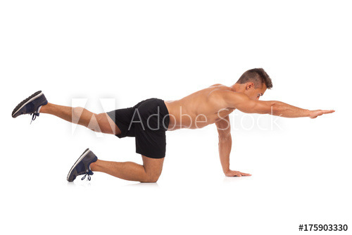

Супермен
Это упражнение популярно везде, как для тренировок спины в домашних условиях, так и для тяжелой атлетики.
Часто его могут заменять подъемами корпуса лежа на животе, хотя это не всегда разумно. Супермен направлен на укрепление самой уязвимой части спины – поясницы, потому если вам негде делать гиперэкстензию, это упражнение должно стать одним из основных.
Как правильно выполнять:
- Лягте на пол, протяните руки и ноги, держа их приблизительно по ширине плеч
- Далее необходимо слегка поднять ноги и руки так, чтобы вы опирались только на торс и грудь.
- При этом, прогните поясницу насколько это возможно и сохраняйте такое положение на протяжении всего подхода.
Поначалу будет достаточно сделать 3 сета по 30 секунд.
Старайтесь тянуться как можно сильнее, это добавит эффективности.